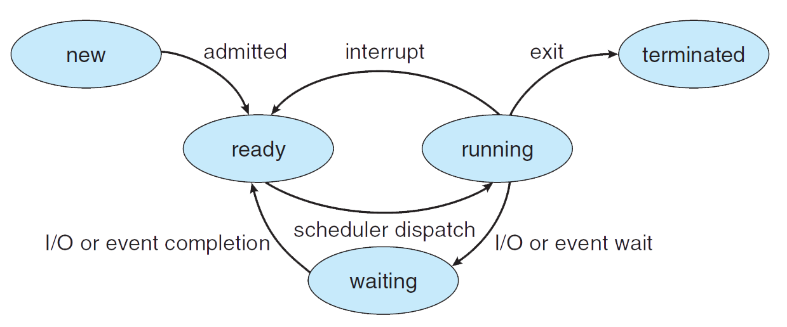

Let's talk about vim and stuff...
Writing is important!
But Terminal is more than writing...!
amir@SomeAwayServer:~/ vim index.html
.
.
amir@SomeFarAwayServer:~/ vim usersCollection.bson
.
.
amir@SomeFarFarAwayServer:~/ vim config.php
Use more out of your keyboard.
Develop a language which does not have a comfortable IDE or editor.
Customize anything..!
Configure anything..!
Eventually, GUI is for dummies!


The name "Vim" is an acronym for "Vi IMproved" *
Vim is often called a "programmer's editor"
* Wikipedia
"Vim is a highly configurable text editor built to make creating and changing any kind of text very efficient. It is included as 'vi' with most UNIX systems and with Apple OS X."
amir@SomeAwayServer:~/ sudo apt-get install vim_
Reading package lists... Done
Building dependency tree
Reading state information... Done
...
Modes Available:
Cheat Sheet No. 1
Cheat Sheet No. 2
Let's talk about Processes and stuff...
What is a Process?
A process is an executing (i.e., running) instance of a program.
Processes are also frequently referred to as tasks.
Process Life Cycle

Top displays a list of processes, with the ones using the most CPU at the top.
amir@Ubuntu:~/ top
amir@Ubuntu:~/ ps
amir@Ubuntu:~/ pstree
Let's talk about User Management and stuff...
Every system: Multitask
Linux: Multiple users!
How does it work properly?
PERMISSIONS
which are read, write and execute!
So how are we gonna view the files' permissions?
ls -l file1.txt
-rw-r--r-- 1 root root 1031 Nov 18 09:22 /etc/passwd
-: type
rw- : defines the permission of owner
r-- : defines permission for the same group as the file owner
r-- : all other users
Creating and Deleting Users
~$ useradd fake
~$ useradd fake -d /home/userHome
~$ useradd fake -f 2
~$ useradd fake -e 2016-11-05
~$ useradd fake -s /bin/shell1
~$ usermod fake -f 2
Setting and Changing Password
~$ passwd fake
Enter new UNIX password:
Retype new UNIX password:
passwd: password updated successfully
~$ passwd
Changing password for fake.
(current) UNIX password:
Enter new UNIX password:
Retype new UNIX password:
Password changed
Another Way of Creating Users
~$ apt-get install adduser
~$ adduser fake
Adding user `cjones' ...
Adding new group `cjones' (1001) ...
Adding new user `cjones' (1001) with group `cjones' ...
Creating home directory `/home/cjones' ...
Copying files from `/etc/skel' ...
Enter new UNIX password:
Retype new UNIX password:
passwd: password updated successfully
Is the information correct? [Y/n] Y
This way is good for first-time administrators.
It automatically creates a home directory and sets the default group, shell, etc.
Deleting User Accounts
~$ userdel fake
This command only deletes the user's account.
~$ userdel -r fake
This command deletes the user, their home folder, and their files, etc.
Little More About Sudo!
- Gives only a few superuser permissions to certain users
- The list of authorized users is kept in /etc/sudoers
- Sudo will prompt for a password and then check the /etc/sudoers.
List of Sudoers!!
How to edit??!
Visudo
~$ visudo
Log into your system as root and enter the command visudo.
# User privilege specification
root ALL=(ALL:ALL) ALL
cjones ALL=(ALL:ALL) ALL
kbrown ALL=(ALL:ALL) ALL
lmartin ALL=(ALL:ALL) ALL
Next time u won't need to login as a root!
Just enter "sudo visudo"!
GROUPS!
Why Groups?!
- Logically organize sets of user accounts
- Allow users to share files within their group
- Each file on the system has both a user and a group owner associated with it.
- Every user is assigned to at least one group
- User has "group access" to any files on the system with a group ID contained in his list of groups.
Some commands:
~$ newgrp group1
~$ groupadd group2
~$ sudo groupmod gp1 -n gp2
~$ ls -al
drwxr-xr-x 2 user user 4096 Jan 9 10:11 documents
``drwxr-xr-x`` are the permissions
``2`` is the number of files or directories
``user`` is the owner
``user`` is the group
``4096`` is the size
``Jan 9 10:11`` is the date/time of last access
``documents`` is the directory
chmod: Change file access permission
chown: Change file owner or group
chroot: Run command with special root directory
~$ chmod u+r,g+x blah.txt
~$ chmod go-rwx Work
User Home Directory
When each user is created, a home directory is created for him (/home/<username>)
The set of files that initially are used to populated this home directory are kept in /etc/skel